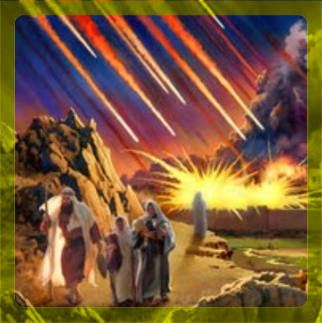

Abraham entra a Egipto
Sucedió en el año 2023 cuando Abraham tenía 75 años.
(1925 aC.)
GENESIS
12:1 Pero Jehová había dicho a Abram: Vete de tu tierra y de tu parentela, y de la casa de tu padre, a la tierra que te mostraré.
12:4 Y se fue Abram, como Jehová le dijo; y Lot fue con él. Y era Abram de edad de setenta y cinco años cuando salió de Harán.
12:7 Y apareció Jehová a Abram, y le dijo: A tu descendencia daré esta tierra. Y edificó allí un altar a Jehová, quien le había aparecido.
12:10 Hubo entonces hambre en la tierra, y descendió Abram a Egipto para morar allá; porque era grande el hambre en la tierra.
Reu muere
Murió a los 239 años de edad.
Vivió del año 1787 al 2026
(2161-1922 aC.)
GENESIS
11:20 Reu vivió treinta y dos años, y engendró a Serug.
11:21 Y vivió Reu, después que engendró a Serug, doscientos siete años, y engendró hijos e hijas.
Ismael nace
Nació en el año 2034.
(1914 aC.)
GENESIS
16:16 Era Abram de edad de ochenta y seis años, cuando Agar dio a luz a Ismael.
Pacto de la circuncisión
Sucedió en el año 2047.
(1901 aC.)
GENESIS
17:24 Era Abraham de edad de noventa y nueve años cuando circuncidó la carne de su prepucio.
Destrucción de Sodoma y Gomorra
Sicedió en el año 2047.
(1901 aC.)
GENESIS
19:24 Entonces Jehová hizo llover sobre Sodoma y sobre Gomorra azufre y fuego de parte de Jehová desde los cielos.
Serug muere
Murió a los 230 años de edad.
Vivió del año 1819 al 2049.
(2129-1899 aC.)
GENESIS
11:22 Serug vivió treinta años, y engendró a Nacor.
11:23 Y vivió Serug, después que engendró a Nacor, doscientos años, y engendró hijos e hijas.
Isaac nace
Nació en el año 2048.
(1900 aC.)
GENESIS
21:5 Y era Abraham de cien años cuando nació Isaac su hijo.
Inicio de los 400 años de opresión
Abarca del año 2053 al 2453.
(1895-1495 aC.)
GENESIS
15:13 Entonces Jehová dijo a Abram: Ten por cierto que tu descendencia morará en tierra ajena, y será esclava allí, y será oprimida cuatrocientos años.
Isaac es llevado al sacrificio
GENESIS
22:1 Aconteció después de estas cosas, que probó Dios a Abraham, y le dijo: Abraham. Y él respondió: Heme aquí.
22:2 Y dijo: Toma ahora tu hijo, tu único, Isaac, a quien amas, y vete a tierra de Moriah, y ofrécelo allí en holocausto sobre uno de los montes que yo te diré.
Nota: Josefo, en su libro Antigüedad de los Judíos asegura que ocurrio cuando Isaac tenia 25 años de edad.
Taré muere
Murió a los 205 años de edad.
Vivió del año 1878 al 2083.
(2070-1865 aC.)
GENESIS
11:32 Y fueron los días de Taré doscientos cinco años; y murió Taré en Harán.
NOTA: El Arzobispo James Ussher tuvo un grave error de interpretación con respecto de la muerte de Taré, la biblia dice que Taré engendró a Abraham cuando tenía 70 años (Gn. 11:26) y que Abraham salió de Ur con su padre y sobrino, cuando Abraham tenía 75 años (Gn. 12:4) lo que nos indica que Taré tenía 145 años de edad cuando salió de Ur, luego entonces como la biblia dice que que Taré no llego q Cannan y que murió a los 205 Años (Gn. 11:32) Ussher supuso que Taré no había engendrado a Abraham a los 70 años, sino a los 130 Años, añadiendo 60 años inexistentes a la historia de la humanidad. Taré no llego a Canaan porque se quedo a vivir 70 años en la ciudad donde murio su hijo Harán, pero eso lo hizo Ussher intencionalmente para hacer coincidir el nacimiento de Cristo exactamente al año 4000 después de Adán. la cuenta le quedó finalmente en 4004 años y por eso invento que Cristo había nacido en el Año 4 antes de Cristo, error que permanece desde el año 1656 dC.; está investigación nace con la finalidad de detectar éste y todos los mitos de interpretación histórica que existan al respecto.
Sara muere
Murió a los 127 años de edad.
Vivió del año 1958 al 2085
(1990-1863 aC.)
GENESIS
23:1 Fue la vida de Sara ciento veintisiete años; tantos fueron los años de la vida de Sara.
Arfaxad muere
Murió a los 438 años de edad.
Vivió del año 1558 al 2096
(2290-1852 aC.)
GENESIS
11:12 Arfaxad vivió treinta y cinco años, y engendró a Sala.
11:13 Y vivió Arfaxad, después que engendró a Sala, cuatrocientos tres años, y engendró hijos e hijas.
Jacob nace
Nació en el año 2108
(1840 aC.)
GENESIS
25:26 Después salió su hermano, trabada su mano al calcañar de Esaú; y fue llamado su nombre Jacob. Y era Isaac de edad de sesenta años cuando ella los dio a luz.
Abraham muere
Murió a los 175 años de edad.
Vivió del año 1948 al 2123.
(2000-1825 aC.)
GENESIS
25:7 Y estos fueron los días que vivió Abraham: ciento setenta y cinco años.
Sala muere
Murió a los 433 años de edad.
Vivió del año 1693 al 2126
(2255-1822 aC.)
GENESIS
11:14 Sala vivió treinta años, y engendró a Heber.
11:15 Y vivió Sala, después que engendró a Heber, cuatrocientos tres años, y engendró hijos e hijas.
Heber muere
Murió a los 464 años de edad.
Vivió del año 1723 al 2157
(2225-1791 aC.)
GENESIS
11:16 Heber vivió treinta y cuatro años, y engendró a Peleg.
11:17 Y vivió Heber, después que engendró a Peleg, cuatrocientos treinta años, y engendró hijos e hijas.
Sem muere
Murió a los 602 años de edad.
Vivió del año 1556 al 2158
(2392-1790 aC.)
GENESIS
11:10 Estas son las generaciones de Sem: Sem, de edad de cien años, engendró a Arfaxad, dos años después del diluvio.
11:11 Y vivió Sem, después que engendró a Arfaxad, quinientos años, y engendró hijos e hijas.
NOTA: Muchos interpretan que Sem vivió 600 años, pero en realidad fueron 602, pues Sem nació cuando Noe tenia 500 años de edad, el Diluvio ocurrió en el año 600 de Noé, cuando Sem tenía 100 años, y Arfaxad nació 2 años después del diluvio y Sem murió 500 años después del nacimiento de Arfaxad, lo cual nos da 602 años, sea cual sea el dato no afecta en nada al conteo consecutivo de años de la humanidad.
Ismael muere
Murió a los 137 años de edad.
Vivió del año 2034 al 2171
(1914 - 1777 aC.)
GENESIS
25:17 Y estos fueron los años de la vida de Ismael, ciento treinta y siete años; y exhaló el espíritu Ismael, y murió, y fue unido a su pueblo.
José nace
Nació en el año 2199.
(1749 aC.)
Nota: Podemos calcular el año de nacimiento de José, ya que tenia 39 años de edad cuando su padre tenía 130 años cuando entro en Egipto.
GENESIS
30:22 Y se acordó Dios de Raquel, y la oyó Dios, y le concedió hijos.
30:23 Y concibió, y dio a luz un hijo, y dijo: Dios ha quitado mi afrenta;
30:24 y llamó su nombre José, diciendo: Añádame Jehová otro hijo.
José tiene el sueño de los manojos
Sucedió en el año 2216.
(1732 aC.)
GENESIS
37:5 Y soñó José un sueño, y lo contó a sus hermanos; y ellos llegaron a aborrecerle más todavía.
37:6 Y él les dijo: Oíd ahora este sueño que he soñado:
37:7 He aquí que atábamos manojos en medio del campo, y he aquí que mi manojo se levantaba y estaba derecho, y que vuestros manojos estaban alrededor y se inclinaban al mío.
37:8 Le respondieron sus hermanos: ¿Reinarás tú sobre nosotros, o señorearás sobre nosotros? Y le aborrecieron aun más a causa de sus sueños y sus palabras.
José es vendido por sus hermanos
Sucedió en el año 2216.
(1732 aC.)
GENESIS
37:12 Después fueron sus hermanos a apacentar las ovejas de su padre en Siquem.
37:23 Sucedió, pues, que cuando llegó José a sus hermanos, ellos quitaron a José su túnica, la túnica de colores que tenía sobre sí;
37:24 y le tomaron y le echaron en la cisterna; pero la cisterna estaba vacía, no había en ella agua.
37:25 Y se sentaron a comer pan; y alzando los ojos miraron, y he aquí una compañía de ismaelitas que venía de Galaad, y sus camellos traían aromas, bálsamo y mirra, e iban a llevarlo a Egipto.
37:26 Entonces Judá dijo a sus hermanos: ¿Qué provecho hay en que matemos a nuestro hermano y encubramos su muerte?
37:27 Venid, y vendámosle a los ismaelitas, y no sea nuestra mano sobre él; porque él es nuestro hermano, nuestra propia carne. Y sus hermanos convinieron con él.
37:28 Y cuando pasaban los madianitas mercaderes, sacaron ellos a José de la cisterna, y le trajeron arriba, y le vendieron a los ismaelitas por veinte piezas de plata. Y llevaron a José a Egipto.
José interpreta el sueño al copero
Sucedió en el año 2227.
(1721 aC.)
GENESIS
40:9 Entonces el jefe de los coperos contó su sueño a José, y le dijo: Yo soñaba que veía una vid delante de mí,
40:10 y en la vid tres sarmientos; y ella como que brotaba, y arrojaba su flor, viniendo a madurar sus racimos de uvas.
40:11 Y que la copa de Faraón estaba en mi mano, y tomaba yo las uvas y las exprimía en la copa de Faraón, y daba yo la copa en mano de Faraón.
40:12 Y le dijo José: Esta es su interpretación: los tres sarmientos son tres días.
40:13 Al cabo de tres días levantará Faraón tu cabeza, y te restituirá a tu puesto, y darás la copa a Faraón en su mano, como solías hacerlo cuando eras su copero.
40:14 Acuérdate, pues, de mí cuando tengas ese bien, y te ruego que uses conmigo de misericordia, y hagas mención de mí a Faraón, y me saques de esta casa.
40:15 Porque fui hurtado de la tierra de los hebreos; y tampoco he hecho aquí por qué me pusiesen en la cárcel.
Isaac muere
Murió a los 180 años
Vivió del año 2048 al 2228
(1900 - 1720 aC.)
GENESIS
35:28 Y fueron los días de Isaac ciento ochenta años.
35:29 Y exhaló Isaac el espíritu, y murió, y fue recogido a su pueblo, viejo y lleno de días; y lo sepultaron Esaú y Jacob sus hijos.
José llega al poder
Sucedió en el año 2229.
(1719 aC.)
GENESIS
41:41 Dijo además Faraón a José: He aquí yo te he puesto sobre toda la tierra de Egipto.
41:42 Entonces Faraón quitó su anillo de su mano, y lo puso en la mano de José, y lo hizo vestir de ropas de lino finísimo, y puso un collar de oro en su cuello;
41:43 y lo hizo subir en su segundo carro, y pregonaron delante de él: ¡Doblad la rodilla!; y lo puso sobre toda la tierra de Egipto.
41:44 Y dijo Faraón a José: Yo soy Faraón; y sin ti ninguno alzará su mano ni su pie en toda la tierra de Egipto.
41:45 Y llamó Faraón el nombre de José, Zafnat-panea; y le dio por mujer a Asenat, hija de Potifera sacerdote de On. Y salió José por toda la tierra de Egipto.
41:46 Era José de edad de treinta años cuando fue presentado delante de Faraón rey de Egipto; y salió José de delante de Faraón, y recorrió toda la tierra de Egipto.
Jacob entra en Egipto
Sucedió en el año 2238.
(1710 aC.)
GENESIS
47:5 Entonces Faraón habló a José, diciendo: Tu padre y tus hermanos han venido a ti.
47:6 La tierra de Egipto delante de ti está; en lo mejor de la tierra haz habitar a tu padre y a tus hermanos; habiten en la tierra de Gosén; y si entiendes que hay entre ellos hombres capaces, ponlos por mayorales del ganado mío.
47:7 También José introdujo a Jacob su padre, y lo presentó delante de Faraón; y Jacob bendijo a Faraón.
47:8 Y dijo Faraón a Jacob: ¿Cuántos son los días de los años de tu vida?
47:9 Y Jacob respondió a Faraón: Los días de los años de mi peregrinación son ciento treinta años; pocos y malos han sido los días de los años de mi vida, y no han llegado a los días de los años de la vida de mis padres en los días de su peregrinación.
Jacob muere
Murió a los 147 años
Vivió del año 2018 al 2255
(1840 - 1693 aC.)
GENESIS
47:28 Y vivió Jacob en la tierra de Egipto diecisiete años; y fueron los días de Jacob, los años de su vida, ciento cuarenta y siete años.
José muere
Murió a los 110 años
Vivió del año 2199 al 2309
(1749 - 1639 aC.)
GENESIS
50:26 Y murió José a la edad de ciento diez años; y lo embalsamaron, y fue puesto en un ataúd en Egipto.
Leví
Vivió del año 2178 al 2315
(1770 - 1633 aC.)
EXODO
6:16 Estos son los nombres de los hijos de Leví por sus linajes: Gersón, Coat y Merari. Y los años de la vida de Leví fueron ciento treinta y siete años.
NOTA: Fecha de nacimiento calculada a 70 años por ser el tercer hijo de Jacob.
Aarón nace
Nació en el año 2370.
(1578 aC.)
Nota: podemos calcular el año de nacimiento de Aarón en base a este versiculo que indica que Aarón era 3 años mayor que su hermano menor Moisés.
EXODO
7:7 Era Moisés de edad de ochenta años, y Aarón de edad de ochenta y tres, cuando hablaron a Faraón.
Moisés nace
Nació en el año 2373.
(1575 aC.)
EXODO
2:1 Un varón de la familia de Leví fue y tomó por mujer a una hija de Leví,
2:2 la que concibió, y dio a luz un hijo; y viéndole que era hermoso, le tuvo escondido tres meses.
2:3 Pero no pudiendo ocultarle más tiempo, tomó una arquilla de juncos y la calafateó con asfalto y brea, y colocó en ella al niño y lo puso en un carrizal a la orilla del río.
2:4 Y una hermana suya se puso a lo lejos, para ver lo que le acontecería.
2:5 Y la hija de Faraón descendió a lavarse al río, y paseándose sus doncellas por la ribera del río, vio ella la arquilla en el carrizal, y envió una criada suya a que la tomase.
2:6 Y cuando la abrió, vio al niño; y he aquí que el niño lloraba. Y teniendo compasión de él, dijo: De los niños de los hebreos es éste.
2:7 Entonces su hermana dijo a la hija de Faraón: ¿Iré a llamarte una nodriza de las hebreas, para que te críe este niño?
2:8 Y la hija de Faraón respondió: Ve. Entonces fue la doncella, y llamó a la madre del niño,
2:9 a la cual dijo la hija de Faraón: Lleva a este niño y críamelo, y yo te lo pagaré. Y la mujer tomó al niño y lo crió.
2:10 Y cuando el niño creció, ella lo trajo a la hija de Faraón, la cual lo prohijó, y le puso por nombre Moisés, diciendo: Porque de las aguas lo saqué.
Coat
Vivió del año 2243 al 2376.
(1705 - 1572 aC.)
EXODO
6:18 Y los hijos de Coat: Amram, Izhar, Hebrón y Uziel. Y los años de la vida de Coat fueron ciento treinta y tres años.
NOTA: Fecha de nacimiento calculada a 65 años por ser el segundo hijo de Leví.
Moisés huye de Egipto
Sucedió en el año 2413.
(1495 aC.)
HECHOS
7:23 Cuando hubo cumplido la edad de cuarenta años, le vino al corazón el visitar a sus hermanos, los hijos de Israel.
7:24 Y al ver a uno que era maltratado, lo defendió, e hiriendo al egipcio, vengó al oprimido.
7:25 Pero él pensaba que sus hermanos comprendían que Dios les daría libertad por mano suya; mas ellos no lo habían entendido así.
7:26 Y al día siguiente, se presentó a unos de ellos que reñían, y los ponía en paz, diciendo: Varones, hermanos sois, ¿por qué os maltratáis el uno al otro?
7:27 Entonces el que maltrataba a su prójimo le rechazó, diciendo: ¿Quién te ha puesto por gobernante y juez sobre nosotros?
7:28 ¿Quieres tú matarme, como mataste ayer al egipcio?
7:29 Al oír esta palabra, Moisés huyó, y vivió como extranjero en tierra de Madián, donde engendró dos hijos.
7:30 Pasados cuarenta años, un ángel se le apareció en el desierto del monte Sinaí, en la llama de fuego de una zarza.
Amram
Vivió del año 2303 al 2440.
(1645 - 1508)
EXODO
6:20 Y Amram tomó por mujer a Jocabed su tía, la cual dio a luz a Aarón y a Moisés. Y los años de la vida de Amram fueron ciento treinta y siete años.
NOTA: la Biblia nos especifica claramente en (Éxodo 6:16-20) los años que vivieron Levi, Coat y Amram el padre de Moisés, pero no especifica a que edades fueron concebidos cada uno de ellos, asi que para poder calcular la edad el dato aproximado nos regimos bajo el siguiente criterio, a Levi le asignamos 70 Años por ser el tercer hijo de Jacob, a Coat le asignamos 65 años por ser el segundo hijo de Levi y a Amram le asignamos 60 Años por ser el primogénito de Coat, lo mismo hicimos con el nacimiento de Moisés, por ser el tercer hijo de Amram le asignamos 70 años, cabe mencionar que al asignar este criterio coincide la fecha del éxodo con los 400 de opresi{on y los 430 Años en Egipto que menciona la Biblia
Moisés se presenta ante Faraón
Sucedió en el año 1495 aC.
EXODO
7:7 Era Moisés de edad de ochenta años, y Aarón de edad de ochenta y tres, cuando hablaron a Faraón.
Nace la fiesta de la Pascua
Sucedió en el año 2453.
(1495 aC.)
EXODO
12:1 Habló Jehová a Moisés y a Aarón en la tierra de Egipto, diciendo:
12:2 Este mes os será principio de los meses; para vosotros será éste el primero en los meses del año.
12:3 Hablad a toda la congregación de Israel, diciendo: En el diez de este mes tómese cada uno un cordero según las familias de los padres, un cordero por familia.
12:4 Mas si la familia fuere tan pequeña que no baste para comer el cordero, entonces él y su vecino inmediato a su casa tomarán uno según el número de las personas; conforme al comer de cada hombre, haréis la cuenta sobre el cordero.
12:5 El animal será sin defecto, macho de un año; lo tomaréis de las ovejas o de las cabras.
12:6 Y lo guardaréis hasta el día catorce de este mes, y lo inmolará toda la congregación del pueblo de Israel entre las dos tardes.
12:7 Y tomarán de la sangre, y la pondrán en los dos postes y en el dintel de las casas en que lo han de comer.
12:8 Y aquella noche comerán la carne asada al fuego, y panes sin levadura; con hierbas amargas lo comerán.
Moisés libera al pueblo
Sucedió en el año 2453.
(1495 aC.)
EXODO
12:40 El tiempo que los hijos de Israel habitaron en Egipto fue cuatrocientos treinta años.
12:41 Y pasados los cuatrocientos treinta años, en el mismo día todas las huestes de Jehová salieron de la tierra de Egipto.